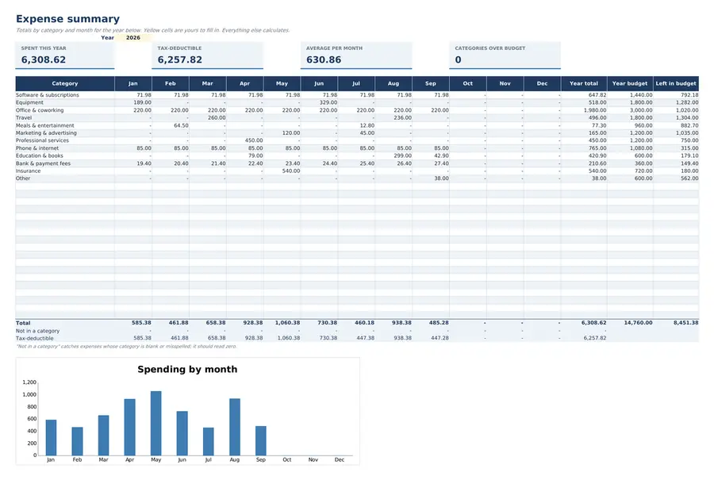
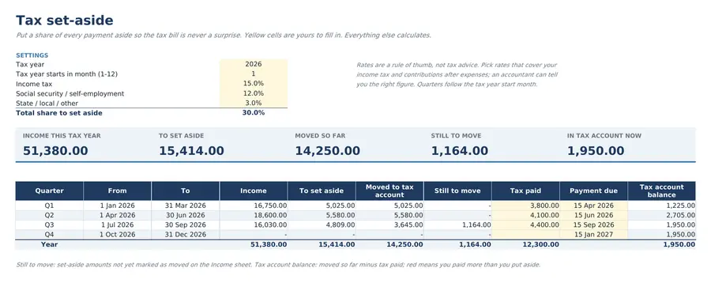
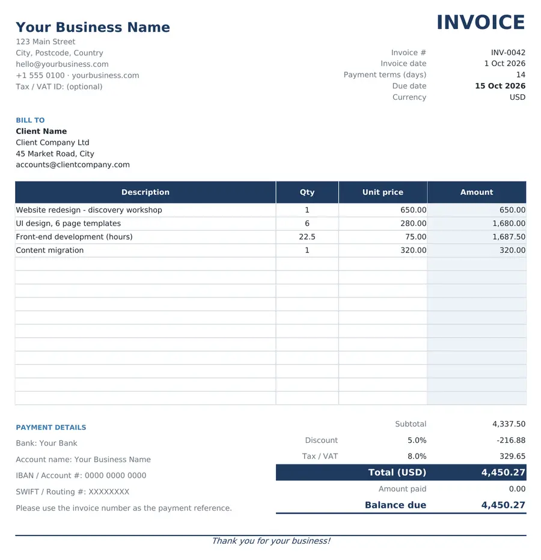
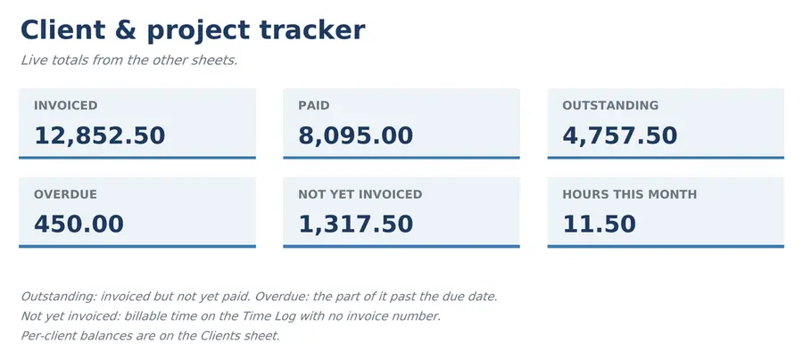
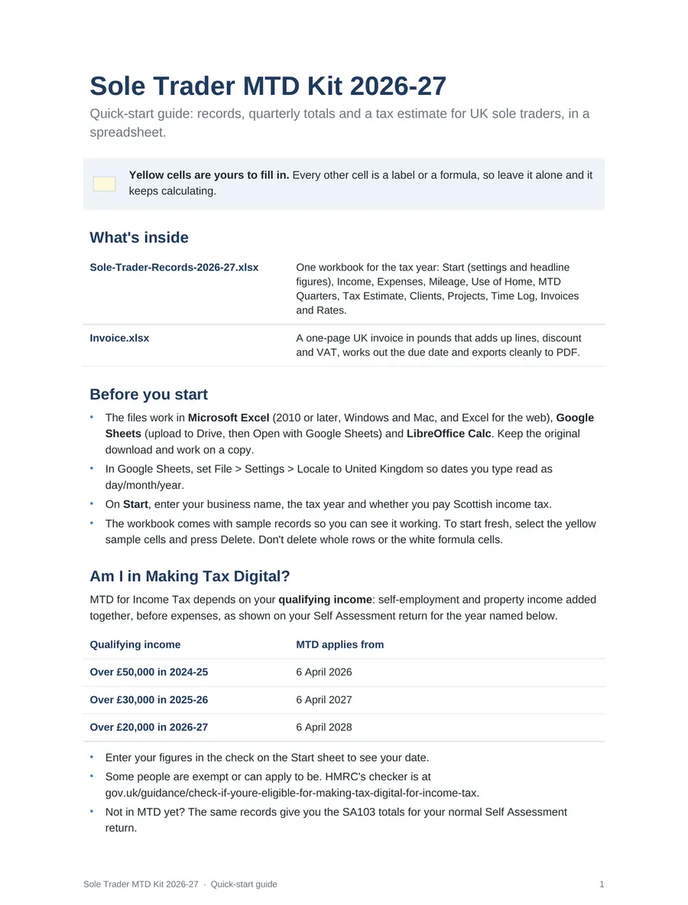

For UK sole traders. From April 2027, anyone with self-employment and property income over £30,000 must keep digital records and send HMRC a quarterly update. This kit keeps those records in Excel or Google Sheets, totals each quarter for your bridging software, and estimates your tax and NI.
Income over £50,000 is in.
Income over £30,000 joins.
Income over £20,000 joins.
Updates due 7 August, 7 November, 7 February and 7 May.
Income here is gross self-employment plus property income, before expenses. Check your own start date.
Spreadsheets for the 2026-27 tax year, made for Excel and Google Sheets, plus a quick-start guide. Spreadsheets count as MTD digital records when paired with bridging software, which sends the quarterly update to HMRC. Fill in the yellow cells; everything else calculates.

One record of what comes in and goes out, under the SA103 expense categories and a tax year from 6 April. Mileage and use-of-home at HMRC's flat rates.
Cumulative income and expenses per SA103 category for each update period, in one fixed range for your bridging software to read.

Income tax bands, the personal allowance taper, Class 4 NI and your payments on account for 31 January and 31 July, from a dated rates table.

Pounds, UK dates and an optional VAT number. Adds up lines, discount and VAT and exports cleanly to PDF.

Clients, projects, time and invoices. Paid invoices feed your income records, so nothing is typed twice.

Am I in MTD, connecting a bridging tool, and the quarterly calendar.
One-off purchase, instant download, no subscription. For your own work and business.